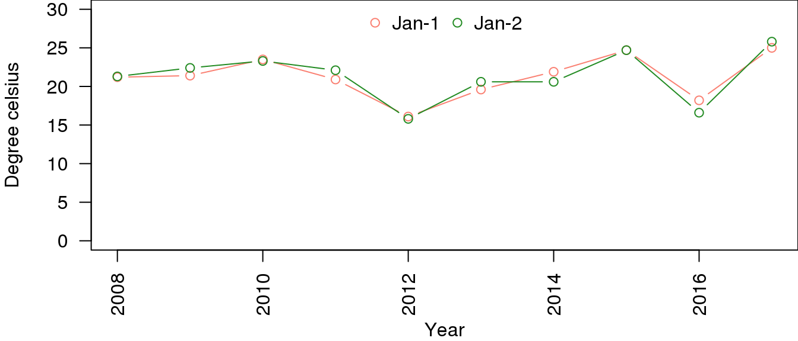

7.5 Bar charts
A barchart is superficially similar to a histogram in the bars of data are displayed. Bar charts are ideal for displaying data associated with categorical data.
Let’s say for example, we want to see the trend for January 1st and 2nd across the last 10 years. The rev() function reverses a given vector.
last.10.years <- colnames(minTemp)
last.10.years <- rev(last.10.years)[1:10]
temp <- as.matrix(minTemp[1:2,last.10.years])
barplot(temp, las=2, col=c('salmon','forestgreen'),
xlab='Year', ylab='Degree celsius')
legend('topright',legend=rownames(minTemp)[1:2], horiz = T, cex=0.75,
col = c('salmon','forestgreen'),pch=15, bty='n')
The above is not suitable as it stacks the bars on top of each other, while we can compare Jan-1, we cannot compare Jan-2:
barplot(temp, las=2, col=c('salmon','forestgreen'), beside=T,
xlab='Year', ylab='Degree celsius')
legend('top',legend=rownames(minTemp)[1:2], horiz = T,
col = c('salmon','forestgreen'),pch=15, bty='n')While this is better and allows for comparison between the two days over the last 10 years, when it comes to timeseries data, it is more suitable to use points and lines to show trend. Replotting the first barplot we saw before using lines and points:
last.10.years.n <- as.numeric(gsub("X","",last.10.years))
last.10.years.n## [1] 2017 2016 2015 2014 2013 2012 2011 2010 2009 2008plot(last.10.years.n,temp[1,],
las=2, ylim=c(0,30), type='b',col='salmon',
xlab='Year', ylab='Degree celsius')
lines(last.10.years.n,temp[2,],col='forestgreen',type='b')
legend('topright',legend=rownames(minTemp)[1:2], horiz = T, cex=0.75,
col = c('salmon','forestgreen'),pch=1, bty='n')
Note that the x-axis in the second plot is in increasing order as we convert the years from characters to numbers.
The second plot is easier to do using the ggplot2 package but this is beyond the scope of this workshop. See our Data preparation, processing and reporting with R workshop.